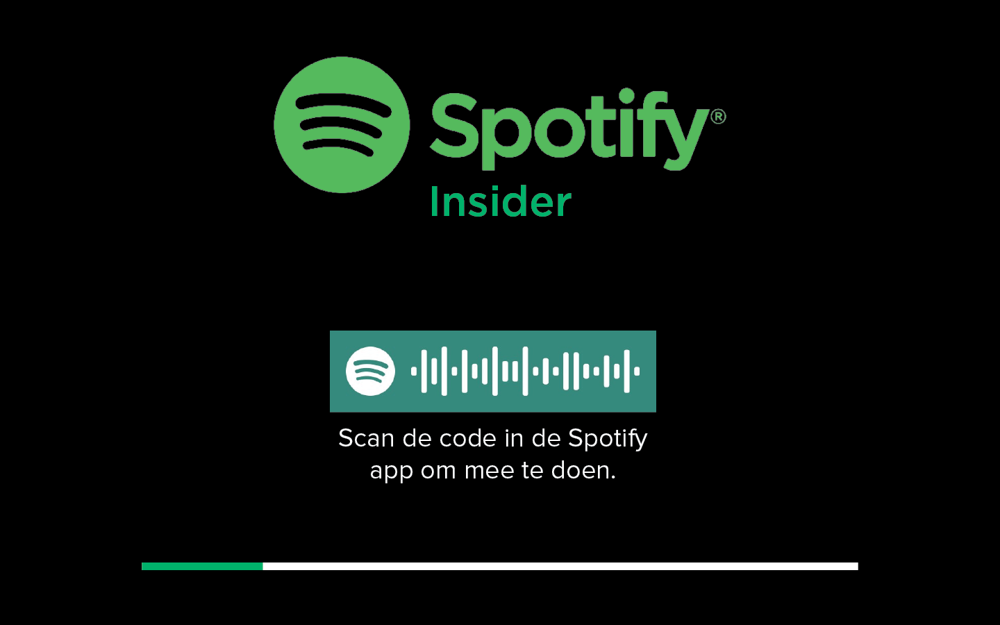
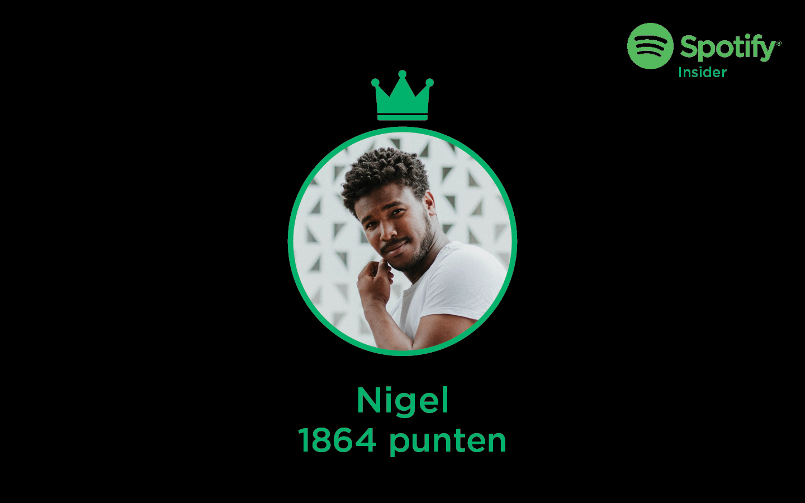
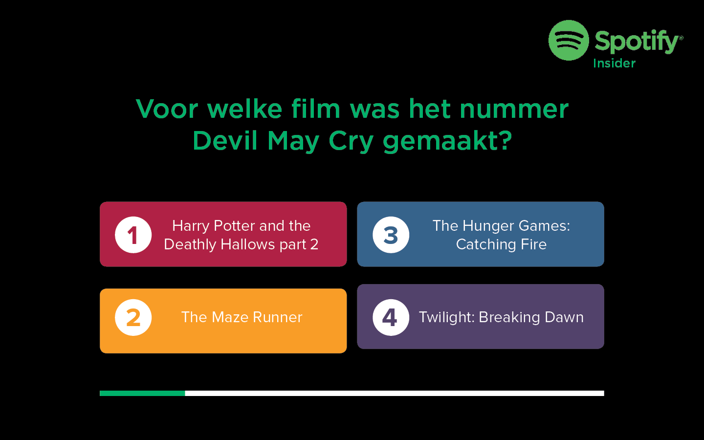
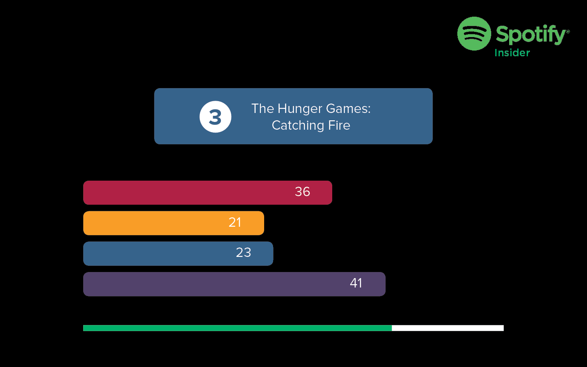
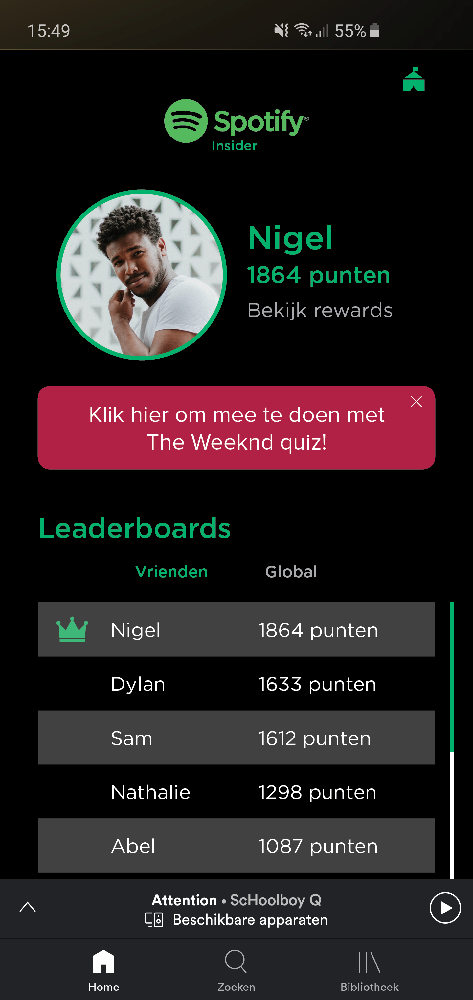
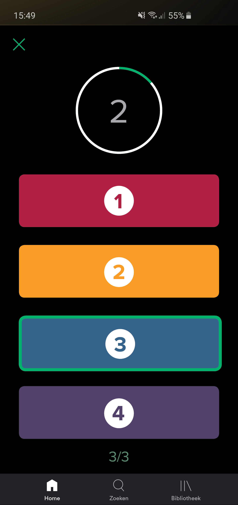
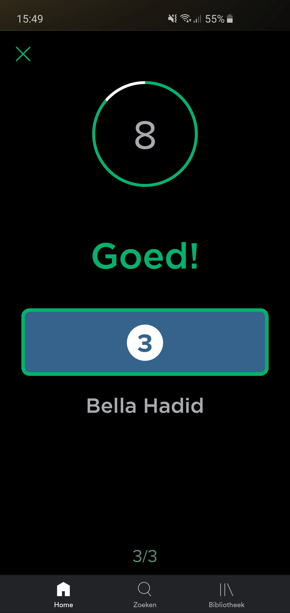
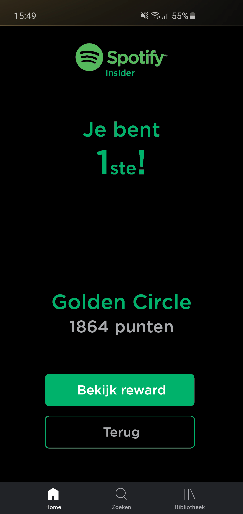

Conceptualiseren
Spotify Insider
Voor het 2e individuele project heb ik een concept bedacht voor Spotify dat ingeschakeld kan worden op festivals, waarmee festivalgangers door middel van een quiz, die start voordat een artiest begint met spelen, op de stage. Dit concept maakt het minst leuke gedeelte van een festival leuker en geeft de festivalganger de mogelijkheid om unieke souvenirs te winnen of zelfs een plaatst in de Golden Circle.
Situatie
Spotify had gevraagd een concept te verzinnen dat aansluit op hun huidige service en ingeschakeld kon worden tijdens festivals.
Taak
De opdracht was voor de doelgroep, in mijn geval muziekfreaks op Lowlands, een passend concept te verzinnen die iets kon betekenen voor deze doelgroep en wat Spotify zij uiteindelijk kon aanbieden. Ik wilde dit concept graag een unieke ervaring kunnen aanbieden voor deze doelgroep.
Activiteiten
Door middel van de doelgroep te onderzoeken en het maken van een Design Rationale, ben ik te weten gekomen hoe je muziekfreaks een ervaring kan laten beleven die ze nooit zouden vergeten.
Resultaat
Het resultaat van mijn onderzoek heeft geleiden tot een concept waarmee de fans van een bepaalde artiest op de proef werden gesteld, de grootste fans werden beloond door een toegang te krijgen tot een VIP zone waarmee zij de artiest beter dan ooit konden zien. De grootste fan en de winnaar van de quiz kreeg zelfs de mogelijkheid om de artiest kort te ontmoeten.
Reflectie
Ik denk dat mijn concept passend was bij de wensen van de opdrachtgever en de doelgroep, ook denk ik dat het concept realistisch bleef en te realiseren was.
       